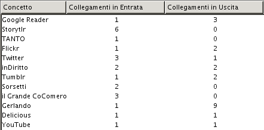
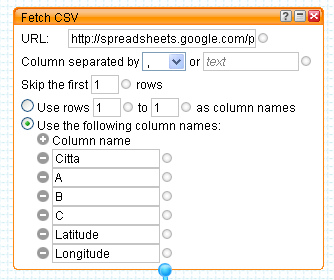

Archivio per la categoria ‘osgeo’
1 giugno, 2009 | di Andrea Borruso
Parliamo spesso di dati e geodati su TANTO, specie negli ultimi tempi. Non abbiamo forse mai parlato di cloud computing:
In informatica, con il termine cloud computing si intende un insieme di tecnologie informatiche che permettono l’utilizzo di risorse (storage, CPU) distribuite.
Si tratta di qualcosa nota sicuramente ai più, e con cui abbiamo a che fare ogni giorno navigando per il web: guardando le mappe di google o le foto su Flickr, un filmato su YouTube o un documento su Scribd. Quando accediamo ad uno di questi servizi, e visualizziamo ad esempio un filmato, non accediamo ad un singolo file, archiviato su un solo hard disk, su un unico server. E’ quasi sempre esattemente il contrario, diverse copie del file, archiviate su numerosi hard disk residenti su molti server.
In realtà è tutto molto più raffinato e spesso non si tratta nemmeno di server “veri”, ma virtuali e distribuiti. E’ un’esigenza sempre più sentita con l’aumentare delle dimensioni dei dati ed il diffondersi di applicazioni “remote”, non installate sul nostro pc.
IBM, Amazon, Google, Microsoft e Yahoo sono tra i più grossi fornitori di servizi di cloud computing. Chi non segue questo mondo, troverà strano trovare Amazon in questo elenco: “Ma non vendono libri???”
Al contrario, chi lo fa, sa che Amazon offre da tempo questi servizi, e con grande qualità.
Quello che io non sapevo era che, oltre ad offrire servizi per realizzare applicazioni di cloud computing, avesse un catalogo di dati pubblici da utilizzare all’interno delle loro applicazioni, e che tra questi ci fosse l’intero catalogo dei dati TIGER degli Stati Uniti. 140 GB di geodati già pubblici (limiti amministrativi, strade, fiumi, costruzioni, etc.) in formato shapefile, che sono anche la base di OpenStreetMap negli USA, accessibili come un disco fisso virtuale, tramite un server virtuale. Tutto chiaro? Non credo, devo aggiungere qualche altro dettaglio.
Il servizio di Amazon per attivare questo disco virtuale di dati si chiama Elastic Block Store (EBS). EBS consente di creare volumi da 1 GB ad 1 TB che possono essere montati (a cui accedere) da un’instanza di un altro servizio fornito da Amazon: Amazon Elastic Compute Cloud (Amazon EC2). Se EBS è un disco virtuale, EC2 è un server virtuale (Linux, Windows e OpenSolaris). In questo modo potrò sviluppare su un server di mia scelta e comodamente, la mia applicazione di webmapping. “Virtualmente” dal punto di vista dell’implementazione tecnologica, ma con molta sostanza nell’erogazione del servizio.
Il servizio non è gratuito, ma sono soldi ben spesi, specie per progetti di grosse dimensioni: risparmierete costi interni e fronteggerete con tranquillità inaspettati successi della vostra applicazione, ed il conseguente “carico” sui vostri server. Non è un servizio “per tutti”, e richiede più di una buona preparazione di base da sistemista.
Detto di questi due “difetti”, io sono rimasto molto colpito dalle opportunità che queste tecnologie e questa “mentalità” potrebbero dare ad esempio a chi sviluppa grosse (e non) applicazioni spaziali sul web. Il condizionale è legato essenzialmente ai geodati: in Italia non esistono ancora dati di dominio pubblico della stessa qualità e con la stessa copertura dei dati TIGER. Il male è che non esistano in generale; non è infatti così importante che non ci siano dati italiani tra i dati pubblici disponibili su Amazon. Se ci fossero, basterebbe soltanto avere delle buone idee ed una buona preparazione, ma non ci sono ed in qualche modo abbiamo un po’ le ali tarpate. Mi fermo con la predica.
Chiudo segnalandovi due video che introducono al mondo del cloud computing:
via Institute for Analytic Journalism
Posted in osgeo, Strumenti | 3 Comments »
13 aprile, 2009 | di Andrea Borruso
Gli eventi abruzzesi mi hanno toccato molto. Non poteva essere diversamente.
Sono un geologo e mi occupo di sistemi informativi geografici; posso dare un piccolo aiuto anche io, sfruttando le mie attitudini e le mie competenze?
Per giorni non ho trovato la risposta, poi mi contatta in chat Alessio Di Lorenzo, un amico biologo abruzzese e curatore del portale cartografico del Parco Nazionale della Majella, e mi chiede se conosco una fonte da cui estrapolare dei dati sugli eventi sismici di questi giorni. Li vuole elaborare e trasformare in una sorgente geoRSS, prendendo spunto proprio da quanto abbiamo scritto qui. Inizialmente la cosa mi ha fatto piacere, ma non mi ha stimolato nulla. In seguito, aprendo l’URL che gli ho inviato, quello del Centro Nazionale Terremoti dell’Istituto Nazionale di Geofisica e Vulcanologia, qualcosa mi ha fatto “click” in testa. Ma “poco poco, piano piano”.
Mi sono passati davanti agli occhi, i dati sismici pubblicati in questi giorni. Quelli “ufficiali”, quelli presentati dai giornali online di tutto il mondo, quelli sui blog. Alcuni sono caratterizzati da piccole grandi carenze, potenzialmente superabili con poco sforzo, ma con origini che sono profonde.
Tim Berners-Lee, uno degli “inventori” del World Wide Web, ha presentato nello scorso Febbraio una relazione orale sul futuro del Web (grazie a Stefano Costa per la segnalazione). E’ visibile in diversi siti, e gli dovreste dedicare 15 minuti del vostro tempo (se la guardate qui ci sono i sottotitoli, ha un inglese “difficile”), qualsiasi mestiere facciate. In quella sede ha lanciato uno slogan: “raw data now“, letteralmente “dati grezzi ora”. Ha invitato il “mondo”, gli enti pubblici e quelli privati, a “liberare” i propri dati e creare i presupposti affinché questi possano essere accessibili e mescolati tra loro. Ha invitato inoltre tutti noi a stimolare chi detiene dati, a muoversi in questo senso; senza la condivisione, questi perdono quasi del tutto la loro qualità.
Berners-Lee individua tre regole:
- deve bastare un semplice indirizzo web, un URL, per puntare ad un dato
- chiunque abbia accesso a quell’URL, deve poter scaricare i dati in qualche formato standard
- devono essere descritte le relazioni tra i dati (Andrea è nato a Palermo, Palermo è in Italia, etc.), e queste relazioni devono essere espresse ancora una volta tramite un’URL
Questo sarà il web 3.0, basato sui dati e (si spera) sulle relazioni semantiche tra gli stessi. Ma torniamo ai dati sismici sul nostro paese. Rispettano queste tre regole?
Questa non sarà una critica al CNR ed all’INGV. Leggo sul loro sito, che gran parte dei dati da loro pubblicati in questo contesto, sono affidati (ancora una volta) al volontariato. A molti dipendenti infatti sembra non sia stato rinnovato il contratto. Non conosco questa situazione, ma è molto triste anche soltanto immaginare che una funzione di questo tipo possa essere “relegata” a semplici attività di volontariato.
Quello dei dati sismici è per me solo uno spunto, ed il discorso va allargato a tutti i contesti in cui esistano dei dati pubblicati in modalità poco efficienti (o addirittura non pubblicati).
Il formato in cui sono accessibili gran parte dei dati sismici è il CSV :
è un formato di file basato su file di testo utilizzato per l’importazione ed esportazione (ad esempio da fogli elettronici o database) di una tabella di dati. Non esiste uno standard formale che lo definisca, ma solo alcune prassi più o meno consolidate.
Un esempio pratico è quello delle date, espresso in alcuni file dell’INGV in questo formato YYYY/MM/DD (2009/04/13). Aprendo uno di questi file con un foglio elettronico, il campo “data” verrà quasi sicuramente interpretato in automatico ed adattato alle impostazioni “locali” del vostro PC. Su molti PC italiani, sarà infatti forzato questo formato: DD/MM/YYYY (13/04/2009). E’ la stessa data? Sembra di si. Ma se iniziassimo a scambiare questi dati con colleghi, che usano un semplice blocco note per aprire il file CSV (senza quindi che i dati siano “trasformati”), o che vivono in un altro paese (quindi con un’impostazione locale differente), in quanto tempo ne perderemmo l’integrità?
Usando degli standard, ad esempio per le date l’ISO 8601 , riusciremo a dare ai nostri dati una vita più lunga ed anche una “platea” molto più estesa.
Altre volte i dati sono pubblicati come tabelle HTML. Avete mai provato a fare copia ed incolla di una tabella, da una pagina web ad un foglio elettronico? Molte volte se ne esce con le ossa rotte.
E’ giusto pubblicare i dati in html, ma dovremmo sempre fornire anche altre possibilità. Il servizio geologico americano (“so forti li americani”), lo USGS, pubblica da tanti anni un catalogo di eventi sismici in tre formati: KML (il formato di Google Earth che è ormai uno standard OGC), CSV ed XML (geoRSS). E’ una scelta che mi sembra cristallina. Si conciliano infatti formati adatti ad un’immediata divulgazione, con un formato RAW (come direbbe Tim Berners-Lee). Il file KML e quello XML consentono ai dati di essere interpretati correttamente da una macchina e di essere “mescolati” più facilmente con altri provenienti da altri pc, scritti con altri software e prodotti da altri gruppi di lavoro. Questa opportunità è un aspetto molto importante, in quanto l’incrocio di dati diversi spesso fa saltare agli occhi significati inaspettati; a costo di essere noioso, se non definisco i miei dati in un formato standard, sarà difficile riuscire a correlarli “immediatamente” con altri. L’INGV si sta muovendo sullo stesso solco, e in questa pagina troverete i dati degli eventi sismici degli ultimi 90 giorni sia informato CSV, che KML. Ma troverete anche questo avviso:
Le informazioni contenute in queste pagine sono state sinora garantite dalla disponibilità del personale, precario e non dell’Istituto Nazionale di Geofisica e Vulcanologia. L’agitazione del personale dell’Istituto contro l’emendamento 37bis alla proposta di legge 1441 quater, che in sostanza provocherebbe il quasi immediato licenziamento del personale precario, porterà alla sospensione di tutte le attività. Nell’immediato si procederà al blocco di ogni tipo di informazione telematica e telefonica non istituzionale.
Ma torniamo un attimo alle tre regole di sopra. La prima può sembrare meno importante, ma nasconde nella sua semplicità di formulazione un grande potere (sembra Spiderman).
Usiamo ogni giorno gli indirizzi http, gli URL. Li usiamo in modo naturale e spontaneo, senza chiederci cosa siano, su cosa si basino e come funzionino. E non c’è nulla di male.
Quando cambio canale della mia TV con un telecomando, non devo avere alcuna nozione sulla trasmissione dell’infrarosso; devo soltanto saper che devo usare un determinato tasto. Se prendo il telecomando del mio nuovo stereo, mi viene naturale utilizzarlo allo stesso modo. Così per il lettore DVD e per la mia pompa di calore (dite che questa è una forzatura?).
Anche accedere a diversi tipi di dati, di diversa origine, dovrà essere una cosa così semplice e “spontanea”. Con lo stesso protocollo, l’http, non più accedere “soltanto” a pagine web ma anche a fonti di dati grezze.
Quello che gli eventi abruzzesi mi hanno stimolato, come uomo e come professionista, è l’attenzione alla politica della gestione dei dati. Le classi dirigenti del nostro paese dovrebbero allinearsi a quanto esposto da Tim Berners-Lee. Sia perché il cittadino possa essere informato, sia per dare forza e valore ai dati, i quali se chiusi in un hd o divulgati in modo inappropriato rischiano di essere inutili e di produrre uno spreco (non soltanto economico).
Dobbiamo tenere alta l’attenzione verso questi temi.
I fatti di questi giorni, il dialogo con i colleghi di TANTO, l’indiretto stimolo di Alessio, i post di altri blogger, mi hanno spinto anche a provare a realizzare una piccola cosa concreta, proprio a partire dai dati sismici della regione Abruzzo.
Si tratta di qualcosa che a prima vista è confrontabile alle interfacce di webmapping basate su Google Maps, in cui in coincidenza della posizione di ogni evento sismico è raffigurato un “pallino”. Quello che ho provato ad aggiungere è la possibilità di modificare e “mescolare” i criteri di visualizzazione del dato: a partire dalla serie di dati che ho estratto, poter visualizzare ad esempio soltanto gli eventi sismici di Marzo, di magnitudo maggiore di 4, di profondità compresa tra 5 e 10 km e del distretto sismico del “Gran Sasso”. L’utilizzo di questi filtri mi ha dato (da utente) la sensazione di potere leggere “meglio” i dati; spero che non dipenda dall’emotività con cui ho lavorato su questo piccolo progetto.
Ho aggiunto anche una timeline, che da la possibilità di passare dalla visualizzazione degli eventi in scala spaziale, ad una efficacissima in scala temporale. Anche qui potrete usare gli stessi filtri.
 C’è una visualizzazione tabellare “dinamica” in HTML, ordinabile usando qualsiasi delle colonne presenti, ed anche questa “sensibile” ad i filtri.
C’è una visualizzazione tabellare “dinamica” in HTML, ordinabile usando qualsiasi delle colonne presenti, ed anche questa “sensibile” ad i filtri.
Infine i dati sono esportabili in diversi formati, tra i quali: RDF/XML, Semantic wikitext, Tab Separated Values. Per attivare l’export basta andare con il mouse alla sinistra del modulo “Cerca”, e cliccare sull’icona a forma di forbice che verrà visualizzata (vedi figura).
Purtroppo ho riscontrato un problema con l’export nel formato a cui tenevo di più – RDF/XML – ma spero di risolverlo nei prossimi giorni (è un piccolo autogol  ).
).
L’interfaccia sviluppata ha però un vero grande difetto (e magari non sarà l’unico): non si aggiornerà in automatico, ogni volta che verranno pubblicati nuovi dati dall’INGV. Questo perché sono partito dai quelli pubblicati qui (una tabella HTML), e non da quelli in CSV o KML. Nei prossimi giorni proverò a partire da quelli in CSV, darli in pasto a Yahoo! Pipes ed automatizzare il processo di pubblicazione.
L’applicazione è visibile qui, e qui sotto vedete uno screenshot della timeline.

E’ realizzata con Exhibit, e ci scriverò a breve un tutorial di dettaglio. In questo post volevo “fare” altro.
Chiudo dando la disponibilità di collaborazione mia e dei miei colleghi, a chiunque ritenga che le nostre competenze possano essere d’aiuto in questo momento.
Un abbraccio forte a tutti quelli che stanno vivendo questo terribile momento; uomini, donne e bambini con una compostezza ed una dignità fuori dal comune.
“Sopra le nuvole c’è il sereno” diceva Endrigo in una meravigliosa canzone “d’amore”.
Posted in Dati, osgeo | 6 Comments »
8 aprile, 2009 | di Gerlando Gibilaro
La domanda è: possiamo disegnare quanta coscienza abbiamo di ciò che conosciamo (o che crediamo di conoscere)?
Dopo qualche minuto di pausa per capire quale sia esattamente la domanda… vediamo, allora, di iniziare il nostro viaggio partendo da alcune definizioni etimologiche che spesso molti (anche il sottoscritto) danno per scontate.
Conoscenza: ho trovato in questo articolo una bella panoramica sul significato etimologico di conoscenza. In pratica: “comincio ad accorgermi”: “la conoscenza, infatti, non esiste a priori, può essere solo colta nel suo farsi.” In effetti due sono stati gli elementi che hanno catturato la mia attenzione: il “comincio a…” (e non “mi accorgo”) e l’immagine del post sopra indicato: Etimologia di “conoscenza”: una ragazza che segue con le mani una serie di “ghirigori” che legano parole e concetti, ma, forse, anche emozioni, stati d’animo, pulsioni….
Coscienza: a questo termine viene dato, comunemente, un significato etimologico decisamente perentorio: Consapevolezza di ciò che avviene. Non è, tuttavia, estraneo in questo termine l’idea di un percorso, di un cammino, almeno secondo l’insegnamento di Tommaso d’Aquino espresso nella sua reditio (De Ver., 1,9; Sup. Lib. De Causis Exp., 15). Aver coscienza di qualche cosa, pertanto, significa, in primo luogo, aver compiuto un percorso, un viaggio ed essere giunti ad una meta (che inevitabilmente costituirà un nuovo punto di partenza).
Quindi: cominciare ad apprendere ed aver consapevolezza del percorso che si sta intraprendendo. Un binomio che va di pari passo attraverso strade impensabili ed imprevedibili, fatte di casi fortuiti, labirinti, assonanze e dissonanze…
Avere coscienza della propria conoscenza vuol dire fermarsi un attimo, fare il punto della situazione (come su una mappa), decidere quale strada percorrere, mettersi di nuovo in cammino.
La parte più difficile è: fermarsi un attimo, il resto viene da sé.
Nel mio di fermarmi un attimo, mi sono imbattuto nelle, così dette, mappe mentali, mappe concettuali.
Ora, la dottrina più severa tiene ben distinte queste due rappresentazioni grafiche del pensiero. Su Wikipedia, (ma non solo), leggiamo: “Le mappe mentali (mind maps) non vanno confuse con altri tipi di mappe come le mappe concettuali e le solution map, dalle quali si differenziano sia per la strutturazione, sia per il modello realizzativo, sia per gli ambiti di utilizzo“.
Possiamo dire, solo per offrire delle definizioni di massima e per completezza espositiva, senza volerci dilungare troppo, che:
- le mappe mentali sono rappresentazioni grafiche del pensiero, strumenti di conoscenza;
- le mappe concettuali sono strumenti grafici per rappresentare la conoscenza.
Tuttavia, vi dirò che le differenze fra le due tipologie sopra evidenziate non interessano, anche perché non raramente le une possono trasformarsi nelle altre (e viceversa), gli strumenti dell’una possono essere gli stessi dell’altra.
Non di rado mi è capitato, prima della stesura di un atto, di rappresentare graficamente il percorso concettuale che intendevo seguire.
Quando, poi, iniziavo a scrivere mi accorgevo che i concetti espressi secondo la mappa concettuale prima schematizzata, assumevano nuova forma, anzi, si evolvevano nella stesura secondo schemi sconosciuti e, paradossalmente, non pensati dal sottoscritto.
Non potendo rinunciare, quindi, alle idee che fluiscono come un fiume in piena, rinunziando ad una stesura ordinata, l’atto diventava una sorta di brain storming creato a partire dalla mappa concettuale.
Preparato in tale maniera il campo di battaglia, solo dopo diverse riletture e schematizzazioni, sono pronto a riordinare in forma compiuta sia il pensiero grafico, che lo stream of conscious.
In pratica, non di rado mi è capitato di partire da mappe concettuali per approdare a mappe mentali, mappe concettuali che favoriscono il fluire dei pensieri.
Fra i due elementi non esiste un prius e un post, ma una intima relazione: il flusso di pensieri rappresentato in una mappa mentale può confluire in una organizzazione degli stessi secondo una mappa concettuale. Ma vero, come detto, è anche il caso opposto. Ecco che, per fare un esempio, mi sono fermato un attimo ed ho deciso di visualizzare la mia coscienza delle mie esperienze conoscitive e partecipative sul web.
Questo è ciò che ne è venuto fuori:

In sé conosco i vari strumenti ed i vari “luoghi” nei quali opero e mi muovo nel web, ma mi sono chiesto quanta coscienza avessi degli stessi prima della realizzazione di questa mappa. Poca, pochissima.
E me ne sono accorto specialmente visualizzando le interconnessioni e le relazioni fra gli elementi che possono essere molteplici e di varia natura.
Una prima notazione che può essere fatta osservando la mappa è relativa all’utilizzo che fa il nostro Gerlando degli strumenti e dei servizi presenti nel web.
L’utilizzo lo si ricava dai concetti utilizzati per collegare i suddetti strumenti web based .
Questo fatto ci suggerisce l’idea che l’utilizzo di un determinato servizio web non è “univoco” ma è dato dal concetto collegato.
Dire “Gerlando usa Flikr”, oppure “Gerlando ha un account su Flickr” non qualificherebbe il “modo” dell’utilizzo dello strumento.
Nella mappa assume una particolare importanza, prima della relazione, il concetto relazionante.
Ad esempio:
“Gerlando condivide attraverso Flickr”: Non è stato utilizzato il termine “pubblica” là dove si sarebbe suggerito l’idea che Gerlando utilizza Flickr come un photoblog, ovvero che la finalità dell’utilizzo di quel particolare servizio web è il relazionarsi con il mondo esterno.
Non è stato usato il termine “aggrega” là dove si sarebbe suggerito l’idea che l’utilizzo di Flickr fatto da parte di Gerlando sia quello di utilizzarlo come contenitore di elementi fotografici provenienti da diverse fonti e riuniti sotto Flick per comodità, ad esempio. E così via.
La mappa vuole suggerire una certa idea di utilizzo dello strumento Flickr, utilizzato, o valorizzato, in una sua particolare valenza (nel caso specifico per condividere le proprie foto con amici o familiari).
L’utilizzo combinato delle relazioni (frecce) e dei concetti (condivide, pubblica, legge, etc…), amplia a dismisura il “modo” dell’utilizzo dello strumento.
Sempre per seguire il medesimo esempio: è vero che Gerlando utilizza Flickr per “condividere” le sue foto con gli amici, ma è altrettanto vero che utilizza Flickr per “pubblicare” articoli sul blog il Grande CoComero.
Possiamo dire, utilizzando gli strumenti linguistici applicati alla mappa, che Flickr è il significante, le relazioni ed i concetti rappresentano il significato. Il legame tra il “Flickr” e un determinato valore è arbitrario, ovvero non ha una motivazione intrinseca, ma dipende da una scelta.
Sempre di più nel web assistiamo alla progettazione di strumenti il cui valore è dato dai “modi” del loro utilizzo e non da un valore oggettivo.
Ad esempio con gli rss posso seguire gli aggiornamenti di un blog, ma posso utilizzarli, attraverso Pipes, per creare/gestire/monitorare le proprie liste di titoli finanziari visualizzando le ultime quotazioni di borsa (un divertente articolo che illustra ben 35 modi in cui possono essere utilizzati gli RSS , sebbene è del 2006, è questo: 35 Ways You Can Use RSS Today).
L’esempio dell’utilizzo combinato di vari strumenti presenti in rete, considerando anche il fatto che ormai tutti i nuovi programmi installabili nei propri pc sono, per così dire web addicted, costituisce un interessante paradigma a partire dal quale si possono realizzare delle mappe concettuali, utilizzabili anche per illustrare le funzionalità degli strumenti web based (questo è un divertente articolo il cui risultato potrebbe essere ad esempio:
faccio una foto dal cellulare, la invio via email a Flickr – Flickr la pubblica su un blog – Twitter recupera il post e lo pubblica sul mio account – il tutto viene recuperato ed aggregato da Storytlr – il feed di Storytlr viene recuperato da Pipes che lo invia a Facebook – quest’ultimo servizio mi rifiuto di utilizzarlo).
Per la realizzazione della mappa sopra rappresenta sono partito da un foglio di carta dove ho elencato i luoghi di internet da me frequentati o gli strumenti utilizzati, li ho messi in relazione fra di loro con una serie di collegamenti che si sovrapponevano fra di loro in modo confuso.
Poi attraverso Cmap Tools ho iniziato ad enucleare e a decidere i concetti che legano i luoghi, per giungere ad una loro rappresentazione grafica.
Per altro, attraverso Cmap Tools si possono compiere indagini interessanti, quali ad esempio le analisi dei concetti utilizzati nella mappa (collegamenti in entrata ed in uscita), le frasi e/o le proposizioni che collegano i concetti, esportare i dati come testo.

In sé il fascino delle mappe concettuali è grandissimo, là dove assumono un valore particolarmente penetrante non solo gli “oggetti” messi relazione, ovvero le “relazioni” stesse, ma ancora di più il “modo” e il “metodo” del relazionare.
Quello delle mappe concettuali è il mondo della filosofia inteso come metodo conoscitivo.
Le mappe mentali, è evidente, rappresentano, nella loro “folle” e colorata realizzazione, il mondo della scoperta. L’insondabile processo dell’intuizione e dell’intelligenza, là dove vengono composti gli opposti scoprendo che il cammino umano nella conoscenza è davvero tortuoso.
Pertanto ordine e caos, rispettivamente coscienza e conoscenza (un parallelismo forse stravagante e provocatorio, ma devo dire piuttosto stimolante), mappe concettuali e mappe mentali entrambe tese e volte a misurare e a rappresentare il disordine.
Ed è per questo che al sottoscritto non piace parlare di mappe mentali differenziandole dalle mappe concettuali. Quando si inizia non si sa cosa ne verrà fuori (“È pericoloso, Frodo, uscire dalla porta. Ti metti in strada, e se non dirigi bene i piedi, non si sa dove puoi finire spazzato via“).
Più interessante, mi sembra, l’idea di pensare visivamente: il Think visual di Dave Gray.
Concludo rilanciando, invece, l’idea di scoprire i luoghi e le modalità con cui le mappe mentali e mappe concettuali si mescolano e si confondono fra di loro, esplorando quelle zone di confine: là dove, per dirla con Italo Calvino, non è più possibile distinguere il rombo del tuono dall’ululato del lupo (Italo Calvino: Le città Invisibili).
Una serie di link non inseriti nel post (purtroppo), aggiungete i vostri:
Un paio di libri:
- Mappe Mentali: Tony e Barry Buzan (lo potete acquistare qui se volete);
- L’Intelligenza Verbale: Tony Buzan (qui se volete acquistarlo).
Posted in Entropia, osgeo | 2 Comments »
16 marzo, 2009 | di Andrea Borruso
In questo post vi mostrerò come creare una sorgente geoRSS a partire da un file CSV che ho creato per l’occasione. Questo contiene dei dati fittizi su tre città italiane, che voglio pubblicare all’interno della sorgente geoRSS, curandone struttura e formattazione, ed inserendo anche un grafico di sintesi dei parametri presenti in ogni record.
Realizzerò il tutto creando un piccolo mashup sfruttando i seguenti servizi:
- Google Docs, per l’archiviazione dei dati grezzi e per la creazione del CSV a partire da questi
- Yahoo! Pipes, per l’elaborazione del file CSV e la sua trasformazione in geoRSS
- le api di Google Charts, per inserire nella sorgente geoRSS dei grafici di sintesi sui dati contenuti nel file CSV
- Google maps per visualizzare la sorgente geoRSS in una mappa
Un mashup è un’applicazione che, a partire da dati ed informazioni provenienti da due o più fonti/servizi/applicazioni, crea nuove applicazioni/servizi.
Google Docs
Ho creato in Google Docs un nuovo foglio elettronico ed ho inserito dei dati fittizi su tre città italiane. Ho anche aggiunto una colonna per il valore di latitudine, ed una per quello di longitudine (entrambi espressi i gradi decimali).

Per fare dialogare questo foglio elettronico con gli altri servizi citati sopra, dovrò renderlo pubblico; lo farò utilizzando il tasto Share e selezionando l’opzione “Publish as a web page” (così come nella figura sottostante).

Si aprirà una finestra di pop-up e dovrò cliccare su “Publish now“. Fatto questo, cliccherò sul link (presente in basso) “More publishing options“; si aprirà un’altra finestra di pop-up in cui sceglierò CSV come formato di pubblicazione e cliccherò sul tasto “Generate URL”. In ultimo copierò l’URL appena generato e lo incollerò da qualche parte (in un editor di testo).
Yahoo! Pipes e Google Charts
Yahoo! Pipes è il mio editor/cratore di mashup preferito. “Si presenta” ufficialmente così:
Pipes is a powerful composition tool to aggregate, manipulate, and mashup content from around the web.
Con Pipes aggrego ad esempio i feed RSS che pubblico in Blog GIS Italia, ma qui lo utilizzerò in modo diverso.
La prima cosa da fare in Pipes è scegliere la fonte dei nostri dati (possono essere anche più d’una), e in questo caso sceglierò il file CSV di cui sopra; ne andrò a recuperare l’URL e lo incollerò dentro il modulo di Pipes “Fetch CSV”.

Posso personalizzare diverse parametri. In questo caso ho escluso dalla lettura dei dati la prima riga (contiene i nomi delle colonne), ed ho impostato a mano i nomi delle colonne della mia tabella.
A questo modulo, ne collego un altro che trovo tra gli operatori di Pipes: “Rename”.

In questo modo rinominerò il campo “Citta” in “title”, in modo da avere a disposizione uno dei campi necessari per la creazione di una sorgente RSS.
Eseguirò successivamente il primo di due loop presenti in questo Pipe. Per ogni record della tabella andrò a “costruire” l’URL che mi consentirà di creare un grafico tramite le API di Google Charts. La struttura di base dell’URL per la generazione di un grafico tramite queste API è come quella sottostante:
 http://chart.apis.google.com/chart?
chs=250x100
&chd=t:60,40
&cht=p3
&chl=Hello|World
http://chart.apis.google.com/chart?
chs=250x100
&chd=t:60,40
&cht=p3
&chl=Hello|World
Dove:
- http://chart.apis.google.com/chart? è l’URL di base delle API.
- & è il separatore dei parametri
- chs=250×100 è la larghezza dei grafici in pixel.
- chd=t:60,40 sono i dati che voglio rappresentare.
- cht=p3 è il tipo di grafico.
- chl=Hello|World sono le etichette del grafico.
Dovrò adattare questo schema ai miei dati, per struttura, valori e formattazione.
Inserirò allora nel modulo “Loop” di Pipes un costruttore di stringhe – il modulo “String Builder” – con cui genererò un URL utile per la stampa a video di un grafico a torta per ogni record della mia tabella.

Assegnerò i valori di output di questo loop alla variabile “item.chartURI”. Per il primo record verrà generato ad esempio questo URL:
\"http://chart.apis.google.com/chart?cht=p3&chd=t:32,32,34&chl=Parametro
A|Parametro B|Parametro C&chs=450x200&chtt=Reggio Calabria\"
Utilizzerò il modulo “Regex” per fare sì che gli URL generati abbiano una corretta sintassi. Rimuoverò quindi gli spazi e li sostituirò con la stringa “%20″

Utilizzerò adesso il secondo modulo di “Loop”, per generare il contenuto del secondo elemento necessario in una sorgente RSS: il campo “descritpion“. Lo riempirò con delle stringhe di testo con i valori delle colonne che rappresenterò tramite grafico, e con il grafico stesso. Questo per ogni record della tabella.
Posso inserire qualsiasi stringa HTML che sia utile a formattare al meglio gli elementi del mio RSS. Il grafico verrà inserito in corrispondenza del tag <img>, che avrà come source proprio l’URL generato nel primo loop.

Infine:
- userò il modulo “Location Extractor” per trasformare un normale RSS in un geoRSS
- mapperò il campo “link” della sorgente RSS affinché punti al grafico generato
- genererò l’output

Il modulo “Location Extractor” non richiede informazioni aggiuntive, perché sfrutta due colonne presenti nel mio file CSV originario: “Latitude” e “Longitude”. In questo modo ogni elemento del mio RSS sarà geotaggato.
Non mi resta che salvare il mio Pipe cliccando sul tasto “Save”, e provarlo. Per vederlo in azione cliccherò sul link “Run pipe“, visibile nella zona in alto al centro della finestra di editing del Pipe. Si aprirà una pagina come quella sottostante.

Da questavisualizzerò gli elementi della mia sorgente RSS. Nel caso di una fonte geoRSS verrà generata automaticamente una mappa, che potrò inserire in una qualsiasi pagina html (copiando il codice che mi verrà restituito al click sul tasto “Get as a Badge“). Qui sotto vedete il tutto in azione.
Questi alcuni degli altri output possibili:
Google Maps
Due degli output di sopra, RSS e KML, possono essere visualizzati in un istante ed in modo molto efficace in Google Maps.
Basterà incollare uno dei due URL di sopra (RSS o KML) dentro il box di ricerca di Google Maps, e fare click sul tasto di ricerca.

Qui i due risultati in azione:
E’ possibile ottenere questo risultato con (quasi) qualsiasi URL di file KML o sorgenti RSS che siano geroRSS.
Considerazioni finali
Questo post è quasi la traduzione di quest’altro pubblicato su uno dei Blog che mi solletica di più in questo momento: OUseful.Info. Leggerlo è stato divertente, ma lo è stato molto di più mettere in pratica quanto descritto. Quello che vorrei trasmettervi è l’importanza del “fare”: si comprendono i concetti in modo più profondo, ed escono fuori molte più idee.
Quello che mi stupisce sempre è qualità, la varietà, e la “potenza” degli strumenti che abbiamo a disposizione. L’esempio descritto in questo post è semplice, e mentre lo scrivevo mi rendevo conto che con un po’ di fantasia ed ingegno si potrebbero ottenere risultati sorprendenti.
Per utilizzare Yahoo! Pipes è necessario avere un account Yahoo!. Qui il Pipe che ho realizzato, che potrete clonare ed adattare alle vostre “vere” esigenze.
Sitografia letta, consigliata e disordinata
- “Chart Types – Google Chart API – Google Code,” http://code.google.com/intl/it/apis/chart/types.html.
- “Creating Google Charts From CSV Data Inside a Yahoo Pipe « OUseful.Info, the blog…,” http://ouseful.wordpress.com/2009/03/12/creating-google-charts-from-csv-data-inside-a-yahoo-pipe/.
- “GeoRSS – Wikipedia, the free encyclopedia,” http://en.wikipedia.org/wiki/GeoRSS.
- “The scripting library: Combining data and information in the library,” http://www.slideshare.net/bonaria/the-scripting-library-combining-data-and-information-in-the-library.
- “Technical Overview: GeoRSS,” http://www.geowebguru.com/articles/108-technical-overview-georss.
Posted in Didattica, osgeo | 8 Comments »
4 marzo, 2009 | di Andrea Borruso
La prossima conferenza annuale della comunità OpenOffice sarà ad Orvieto dal 3 al 5 Novembre del 2009 (date ancora provvisorie).
La scelta è stata fatta dalla comunità che ha così votato, scegliendo tra sette città:
- Orvieto, 48%
- Budapest, 29%
- Le altre 5 (Alexandria, Guwahati, Quezon City, Reykjavik, Riga) insieme sotto al 10%
Sono utente “soltanto” di OpenOffice da 6 mesi ed è un grande amore. Potrebbe essere una buona occasione per fare un viaggio e conoscere la comunità (chissà che non possa essere l’occasione per incrociarsi con altre).
Posted in Eventi, osgeo | No Comments »